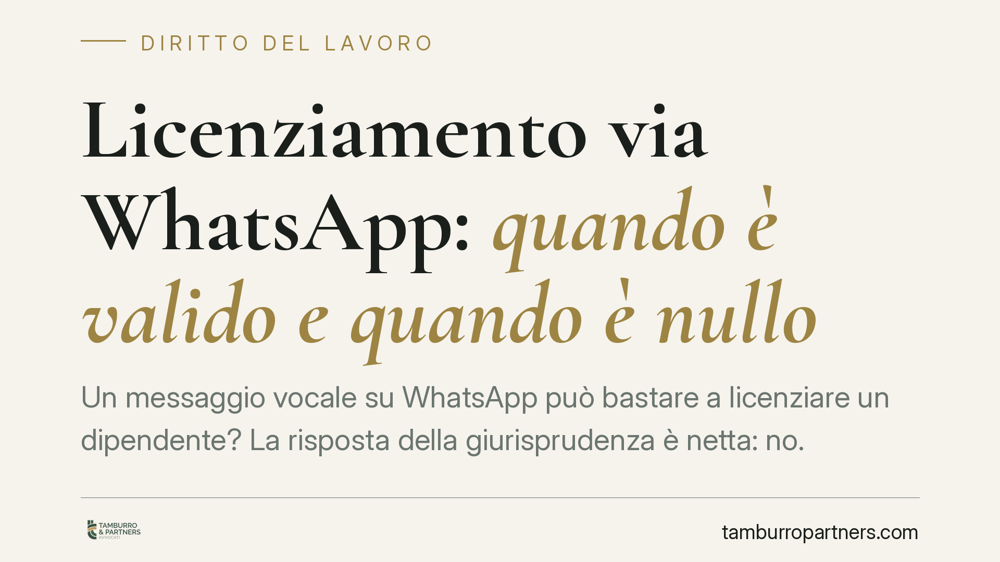

Licenziamento via WhatsApp: quando è valido e quando è nullo
Un messaggio vocale su WhatsApp può bastare a licenziare un dipendente? La risposta della giurisprudenza è netta: no. Mentre il messaggio scritto può soddisfare il requisito della forma, la nota vocale non basta, perché il licenziamento richiede la forma scritta a pena di nullità. La distinzione ha conseguenze pratiche rilevanti per datori di lavoro e lavoratori.

Il caso
La questione è tornata all'attenzione dei tribunali di merito: un licenziamento intimato tramite applicazioni di messaggistica istantanea è valido? La risposta cambia radicalmente a seconda della forma del messaggio.
Secondo l'orientamento consolidato (tra gli altri Trib. Napoli Nord e Trib. Brindisi), il licenziamento comunicato con messaggio scritto su WhatsApp può considerarsi valido, purché sia provata la sua ricezione da parte del lavoratore. Diverso il caso della nota vocale: qui la comunicazione è nulla, perché manca il requisito della forma scritta imposto dalla legge.
Inquadramento normativo
Il punto di partenza è l'art. 2 della L. 604/1966, che impone la comunicazione del licenziamento in forma scritta a pena di inefficacia. La ratio è duplice: rendere certa la data della cessazione del rapporto e consentire al lavoratore di conoscere con precisione l'atto per poterlo eventualmente impugnare nei termini.
La giurisprudenza ha progressivamente aperto alle forme digitali. Un messaggio di testo (SMS o chat) contiene parole scritte: soddisfa quindi il requisito formale, a condizione che sia individuabile la provenienza dal datore di lavoro e sia dimostrata la ricezione. È questo il ragionamento seguito anche dal Tribunale di Grosseto.
La nota vocale, invece, è un file audio: veicola la volontà del datore con la voce, non con la scrittura. Non essendo un documento scritto, non integra la forma richiesta dall'art. 2 L. 604/1966. Il licenziamento così comunicato è nullo, con le conseguenze previste dall'art. 18 dello Statuto dei lavoratori (L. 300/1970) per i rapporti che vi rientrano, o dalle tutele successive per gli assunti dopo il marzo 2015.
Resta ferma la disciplina del licenziamento per giusta causa ex art. 2119 c.c., che riguarda i presupposti sostanziali del recesso, non la sua forma: anche il più grave inadempimento non sana un licenziamento comunicato in modo formalmente invalido.
Implicazioni pratiche
Per il datore di lavoro la lezione è chiara: affidarsi a un messaggio vocale per interrompere un rapporto è un errore che può costare caro. La nullità del licenziamento comporta la ricostituzione del rapporto o pesanti conseguenze economiche, a seconda del regime applicabile. Anche il messaggio scritto, pur astrattamente valido, espone a contestazioni sulla prova della ricezione e sulla riferibilità dell'atto.
Per il lavoratore che riceva un licenziamento tramite chat vocale, la comunicazione è potenzialmente contestabile per difetto di forma. Attenzione però ai termini di impugnazione, che decorrono comunque e che non si sospendono per l'irregolarità formale.
Un dato tecnico spesso trascurato: la prova della ricezione. La doppia spunta blu può indicare la lettura, ma non sempre è considerata prova piena e certa in giudizio. La comunicazione digitale, per quanto rapida, resta più fragile sul piano probatorio rispetto agli strumenti tradizionali.
Cosa fare in concreto
- Datori di lavoro: utilizzate la raccomandata con avviso di ricevimento o la PEC per intimare il licenziamento. Sono strumenti che garantiscono forma scritta e prova della ricezione.
- Non affidatevi mai a note vocali o telefonate per comunicare un recesso: la forma scritta è insostituibile.
- Lavoratori: conservate integralmente il messaggio ricevuto, con data, orario e mittente, senza cancellare la chat.
- Impugnate nei termini: anche se ritenete il licenziamento nullo per la forma, rispettate il termine di 60 giorni per l'impugnazione stragiudiziale e i successivi 180 giorni per l'azione.
- Consigliamo di far valutare a un professionista la validità formale e sostanziale dell'atto prima di assumere iniziative.
Considerazioni finali
La digitalizzazione delle comunicazioni non ha cancellato le garanzie formali che tutelano il lavoratore nel momento più delicato del rapporto. La distinzione tra messaggio scritto e nota vocale non è un formalismo: riflette la funzione stessa del requisito della forma scritta, che è quella di rendere certo e verificabile un atto dalle conseguenze rilevanti.
---
*Contributo informativo a cura di Tamburro & Partners - Avv. Giuseppe Tamburro. Non costituisce parere legale.*
Ogni storia di lavoro ha i suoi tempi.
Se gestisci HR e vuoi un confronto su contenzioso, ispezioni o licenziamenti, scrivi allo studio. Ti rispondiamo entro un giorno lavorativo.